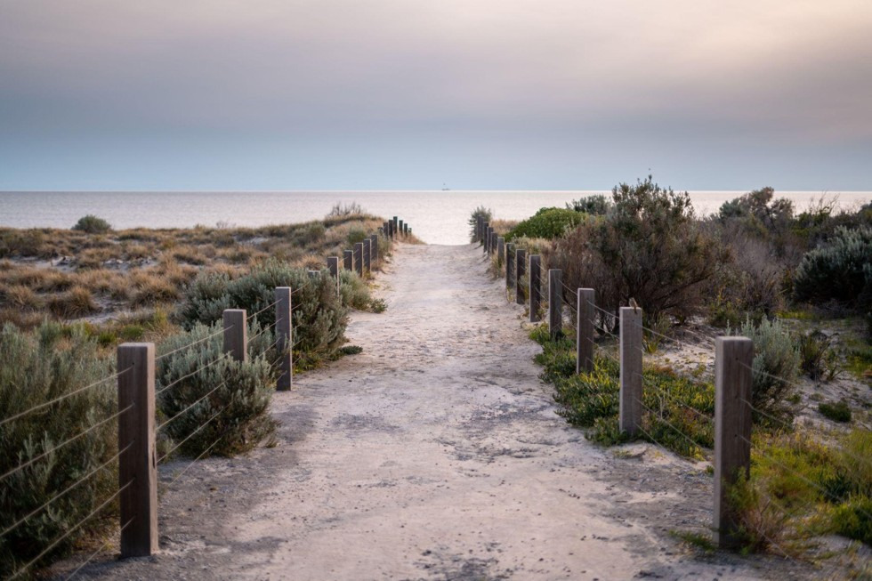

Маяк внутри
О проекте
Маршруты
Специалисты
Ресурсы
Контакты
RU / EN
Маяк внутри
Пространство поддержки на пути к себе
Ты не один. Здесь ты найдёшь опору, вдохновение и инструменты для своей жизни.
Найти свой маршрут ↓
Три направления поддержки
Материалы и практики
Статьи, медитации, чек-листы, упражнения
→
Онлайн-консультации
Консультации со специалистами
→
Группы и встречи
Тематические группы, вебинары, мероприятия
→
Жизненные ситуации
Найти
1
Я переживаю расставание
2
Я проживаю потерю
3
Я потеряла себя и не знаю, чего хочу
4
У меня низкая самооценка

5
Я переживаю перемены в жизни
6
Мой ребёнок развивается иначе
7
Мне трудно выстраивать границы
8
Я потеряла работу
9
Я переехала и чувствую себя чужой
10
Я не знаю, куда двигаться дальше
Ты можешь пройти этот путь не одна
Наши специалисты рядом, чтобы поддержать тебя на каждом этапе.
Познакомиться со специалистами →